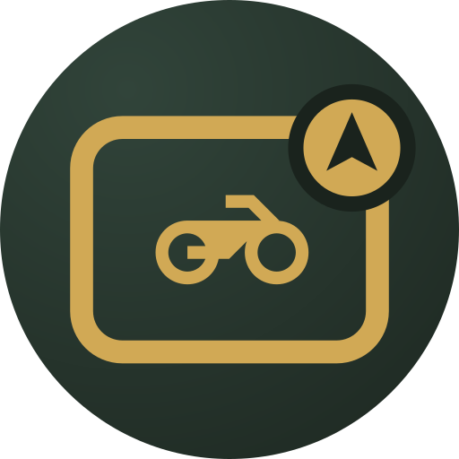
RideScreen AAGoogle Maps, Waze, Spotify และ Assistant บนหน้าจอรถ เชื่อมต่อเองเมื่อคุณสตาร์ทรถ แถมยังมี: ปั๊มน้ำมันที่ถูกที่สุดใกล้คุณ บันทึกการเดินทางพร้อมสถิติ วิดีโอที่ซ้อนความเร็ว และแอปสำหรับนาฬิกา
ฟรี · ไม่มีโฆษณา · โอเพนซอร์ส · Android 10 ขึ้นไป
ดาวน์โหลดเวอร์ชันล่าสุดโดยตรง · หรือที่ GitHub · มีอะไรใหม่ใน v2.4
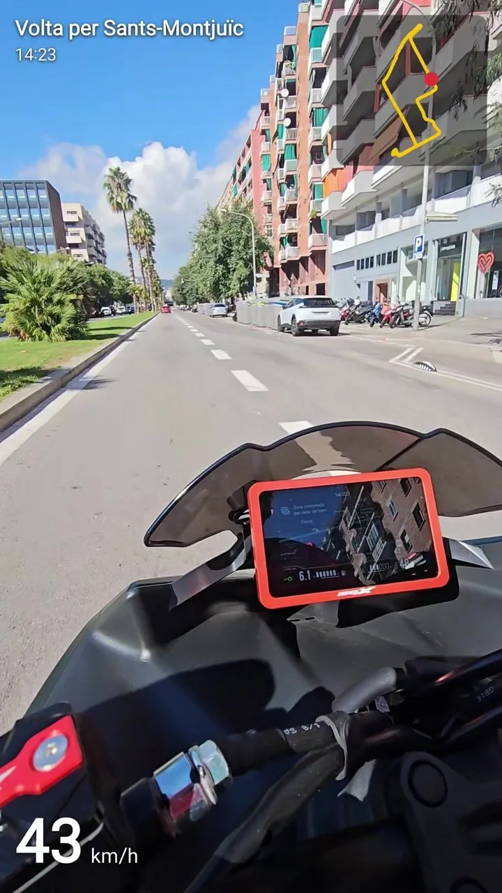
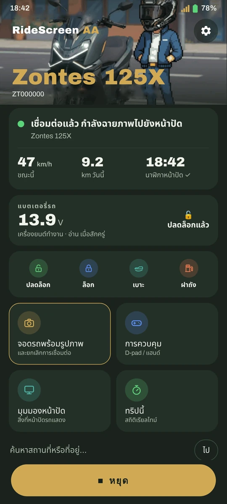
ถ้าหน้าปัดของคุณแสดงรหัส QR สำหรับเชื่อมต่อมือถือ (MotoPlay / EasyConnect) แทบจะใช้ได้แน่นอน แอปนี้ทดสอบทุกวันบน Zontes 125X และพัฒนาต่อจาก OpenCfMoto ซึ่งใช้ได้กับหลายยี่ห้อที่ใช้หน้าปัดแบบเดียวกัน
Zontes 350D, 350E และ T350X: ใช้ได้ตั้งแต่ RideScreen AA 2.4 ซึ่งมีการแก้ไขการเชื่อมต่อแล้ว
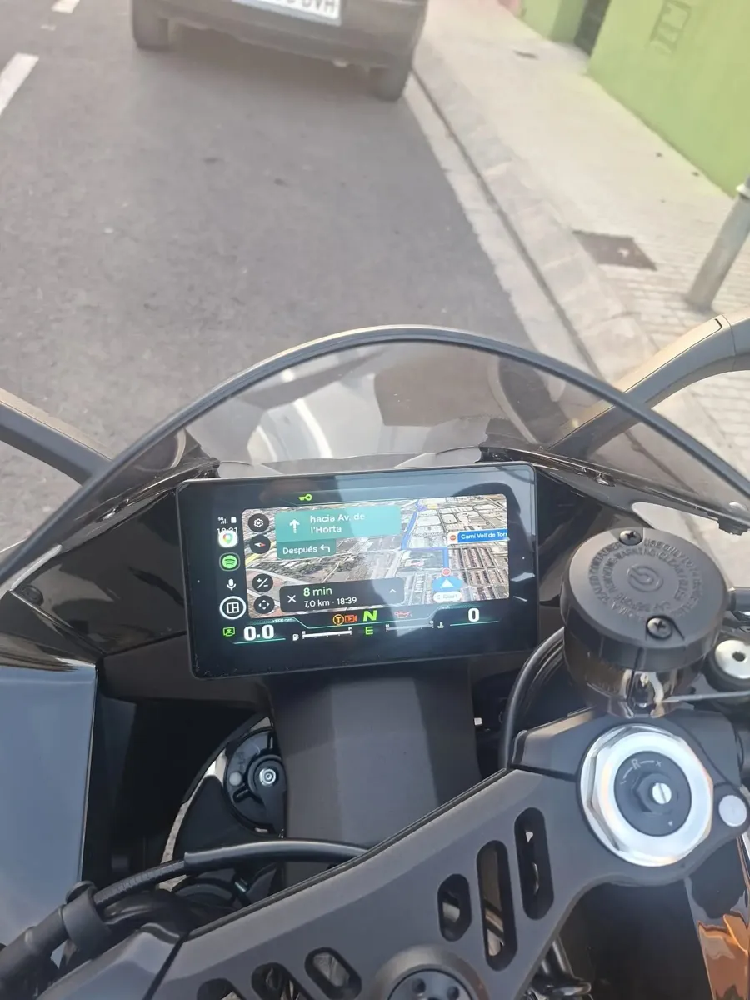
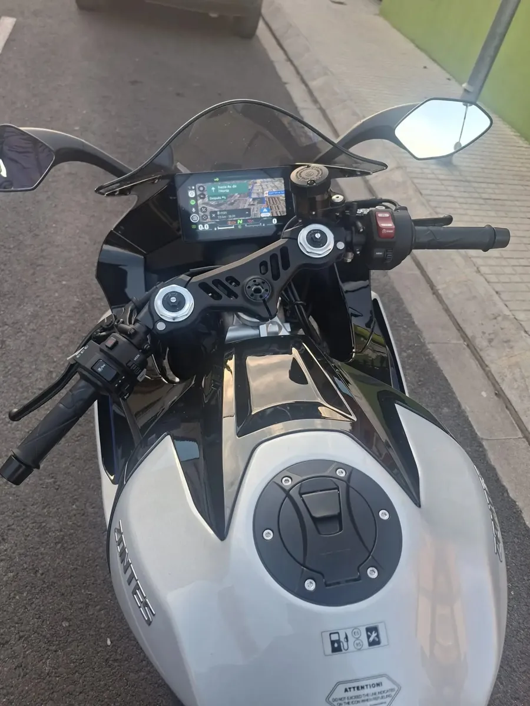
กุญแจอยู่ในมือถือ แดชบอร์ดแสดงข้อมูลของคุณบนหน้าปัด และสิบภาษา ฟรีเหมือนเดิม
ปลดล็อก ล็อก เปิดเบาะหรือฝาถังน้ำมันจากแอป พร้อมยืนยันทุกครั้ง จากนั้นแอปจะตรวจสถานะของรถให้ ไม่ทำงานขณะรถกำลังวิ่ง วิดเจ็ต «การควบคุมรถ» ปลดล็อกเมื่อเชื่อมต่อ (เลือกได้) ล็อกแล้วจบการเดินทาง (เลือกได้) และอ่าน McuID ด้วยกล้องจาก QR บนหน้าปัด
ใหม่ใน 2.4ใช้อะแดปเตอร์ ELM327 Bluetooth อ่านอย่างเดียว: ข้อมูลที่มี รหัสข้อผิดพลาด และรอบเครื่อง ความเร็ว อุณหภูมิ คันเร่งแบบสด และอ่านต่อเนื่องระหว่างฉายภาพ: «เครื่องยนต์ทำงาน» มาจากรอบเครื่องจริงแล้ว
ใหม่ใน 2.4แทน Android Auto แสดงข้อมูลของคุณบนหน้าปัด: สไตล์ Sport, Racing และ Touring ทั้งกลางวันและกลางคืน ปรับให้พอดีกับจอของ 125X และภาพตัวอย่างคือสิ่งที่คุณจะเห็นบนรถ สเกลของหน้าปัดปรับตามรถของคุณ ถ้าไม่มี OBD ความเร็วมาจาก GPS
ใหม่ใน 2.4เล่นซ้ำและวิดีโอการเดินทางพร้อมคันเร่งและรอบเครื่อง และรวมเส้นทาง (ยกเลิกได้)
ใหม่ใน 2.4การ์ดต้อนรับเมื่อเริ่มฉายภาพ การ์ดบอกลาพร้อมสรุปของวัน และแจ้งเตือนฝนเมื่อจอดรถ สำหรับไม่กี่ชั่วโมงข้างหน้าตรงที่คุณจอดรถไว้
ใหม่ใน 2.4เมื่อเปิด «ปุ่มบนแฮนด์ควบคุม Android Auto» ตอนนี้คุณเก็บ ▲/▼ ไว้ปรับระดับเสียงได้
ใหม่ใน 2.4ชีพจรจากนาฬิกาในแอป (❓ ช่วยเหลือ) ทุก 5 วินาที และแอปนาฬิกาแปลครบทุกภาษา
ใหม่ใน 2.4แอปและนาฬิกาครบทั้งภาษาสเปน คาตาลัน อังกฤษ อิตาลี ฝรั่งเศส เยอรมัน โปรตุเกส กรีก รัสเซีย และไทย
ใหม่ใน 2.4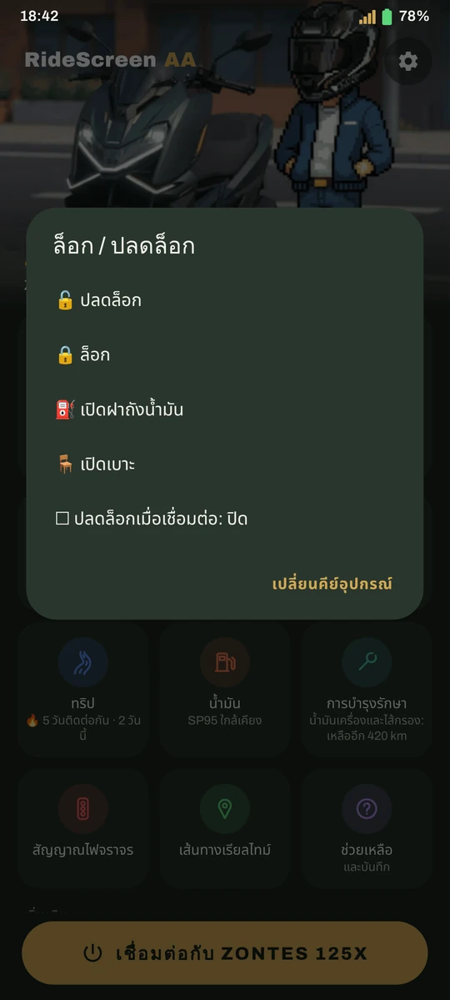
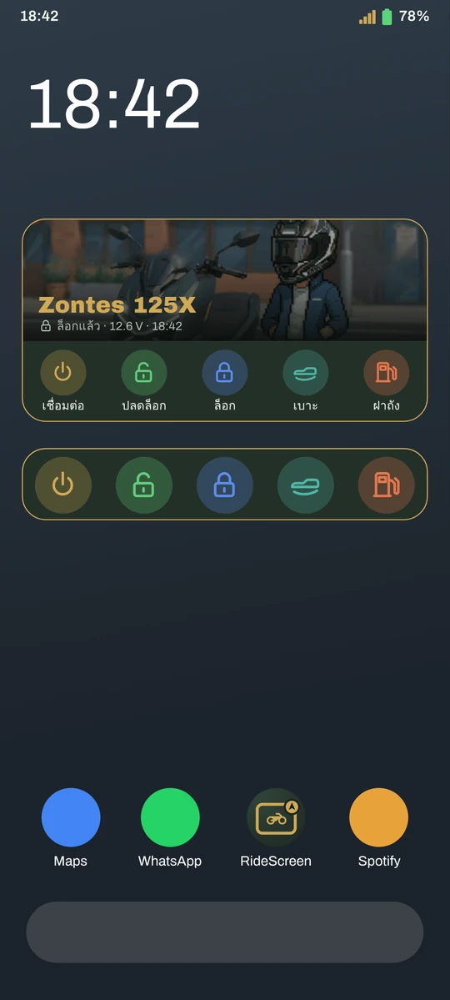
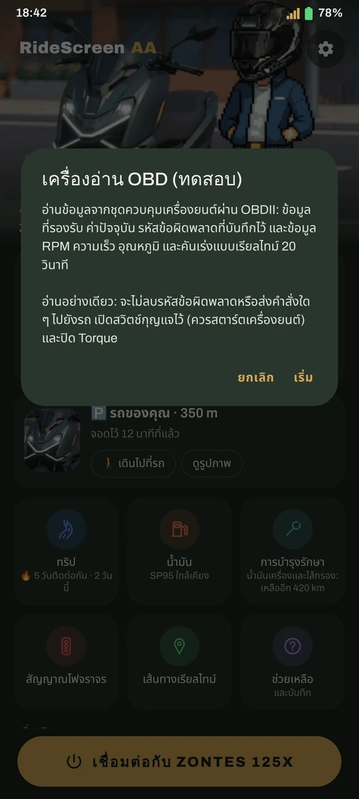
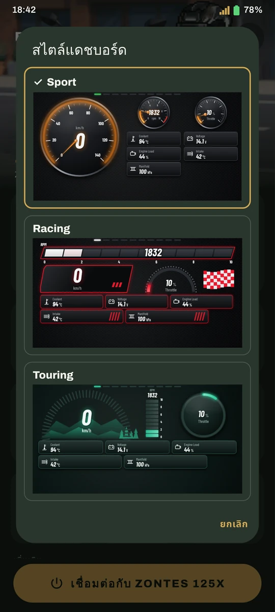
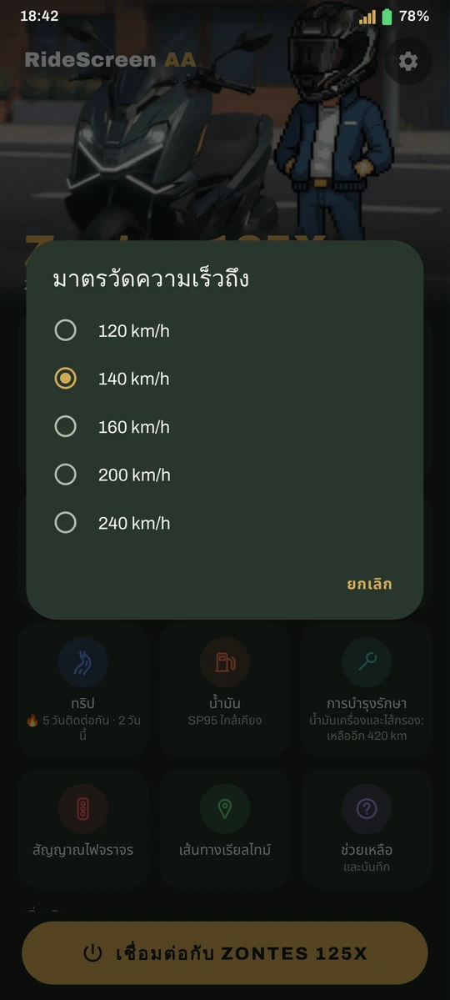
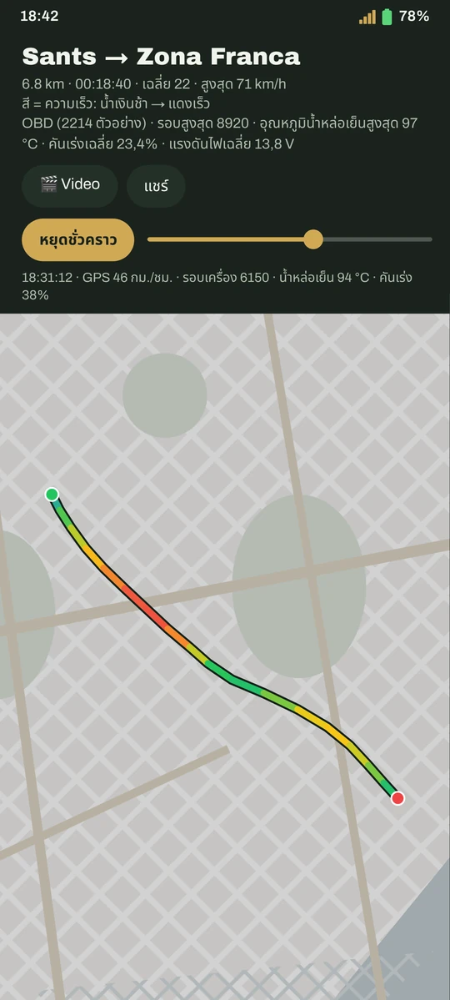
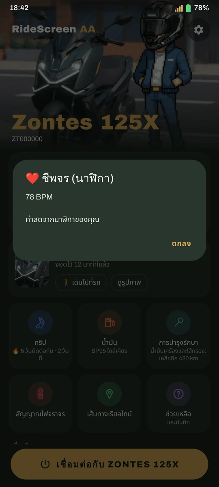
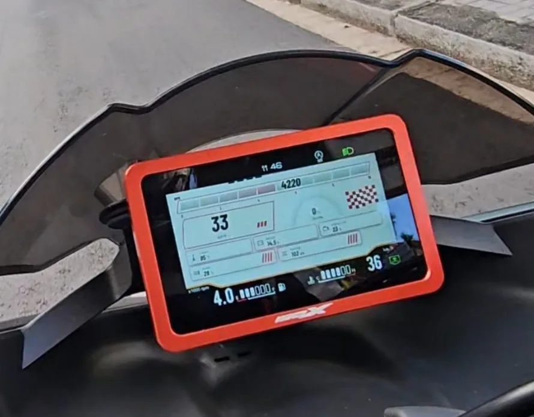
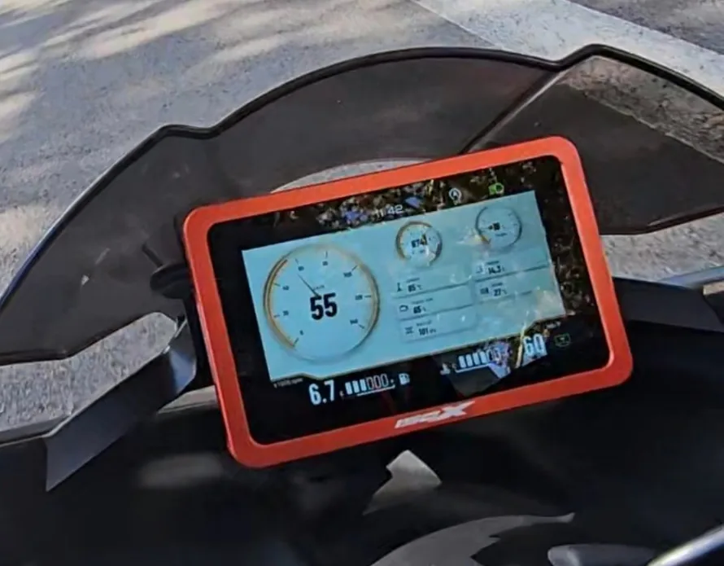
ขอขอบคุณเป็นพิเศษสำหรับเวอร์ชัน 2.4:
ผู้สนับสนุนบน Ko-fi ขอบคุณ!
สตาร์ทรถแล้ว Android Auto จะขึ้นบนหน้าปัด โดยมือถืออยู่ในกระเป๋า
ปรับภาพให้พอดีกับหน้าปัดด้วยปุ่มลูกศร พร้อมดูผลบนรถได้ทันที
คุยกับ Assistant ผ่านอินเตอร์คอม นาฬิกา หรือแว่นตา
ราคาเบนซิน 95 อย่างเป็นทางการใกล้คุณ และ Maps พาไปถึง เฉพาะในสเปน
ทุกการเดินทางถูกบันทึกอัตโนมัติ: เส้นทางตามความเร็ว แผนที่ความถี่ สถิติ และถ้วยรางวัล
รวมคลิปของคุณ (Ray-Ban Meta, กล้องแอ็กชัน, มือถือ) พร้อมแผนที่ ความเร็ว และเวลาซ้อนบนภาพ
คุณหยุดที่ไหนบ่อยที่สุด รอนานแค่ไหน และเส้นทางไหนเร็วกว่าจริงๆ
บันทึกจุดจอดพร้อมรูป เข็มทิศบนนาฬิกาจะพาคุณกลับไปที่รถ
น้ำมันเครื่อง สายพาน การตรวจสภาพ… เตือนเมื่อถึงกำหนด พร้อมอัตราสิ้นเปลืองจริงของคุณ
สัญญาณเตือนบนมือถือและนาฬิกา และถ้าคุณไม่ตอบ จะส่ง SMS พร้อมตำแหน่งของคุณ
ทดลองปลดล็อก ล็อก เปิดเบาะหรือฝาถังน้ำมันจากแอป พร้อมยืนยันทุกครั้ง จากนั้นแอปจะตรวจสถานะของรถให้ ไม่ทำงานขณะรถกำลังวิ่ง วิดเจ็ต «การควบคุมรถ» ปลดล็อกเมื่อเชื่อมต่อ (เลือกได้) ล็อกแล้วจบการเดินทาง (เลือกได้) และอ่าน McuID ด้วยกล้องจาก QR บนหน้าปัด.
ใหม่ใน 2.4แตะครั้งเดียวบนหน้าจอหลักก็เชื่อมต่อกับรถ พร้อมรูปจากโรงรถของคุณ
ใหม่ใน 2.3ผู้ซ้อนเลือกจุดหมายและเพลง และควบคุม Android Auto จากมือถือของเขาเอง
ใหม่ใน 2.3การเดินทางถูกบันทึกทุก 30 วินาที แม้แอปจะปิดไป และคุณยังนำเข้าเส้นทาง GPX ได้
ใหม่ใน 2.3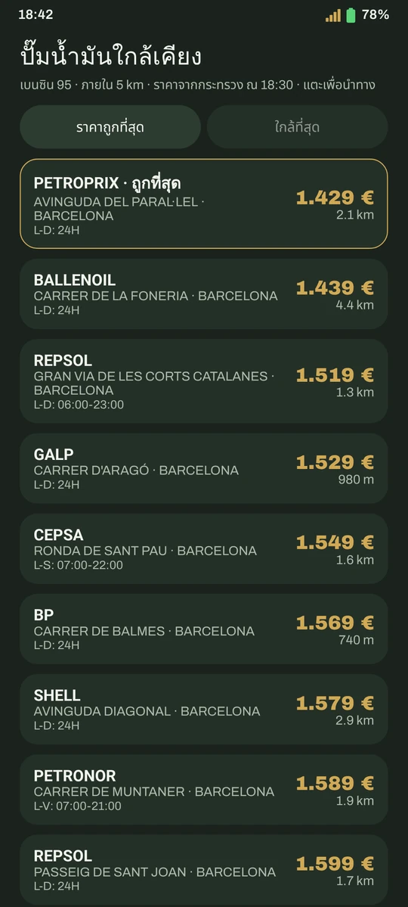
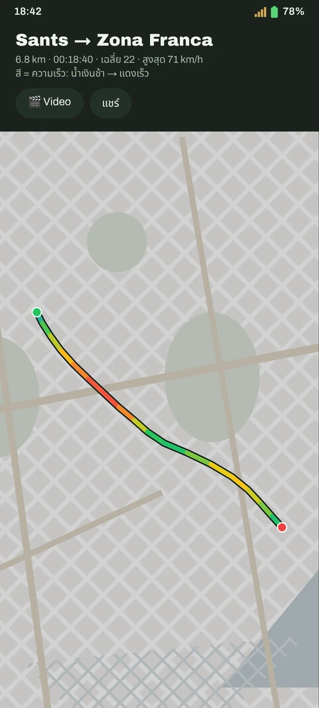
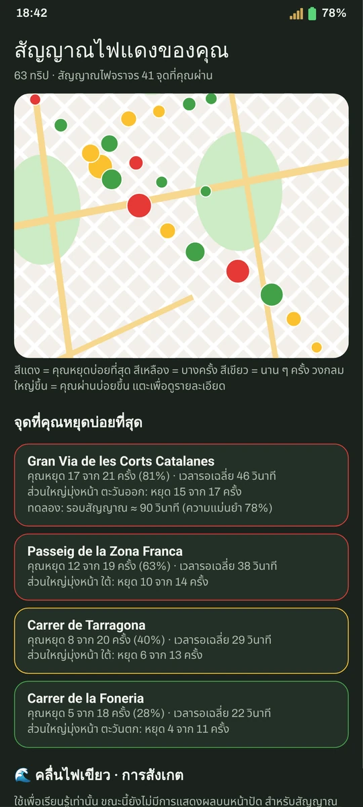
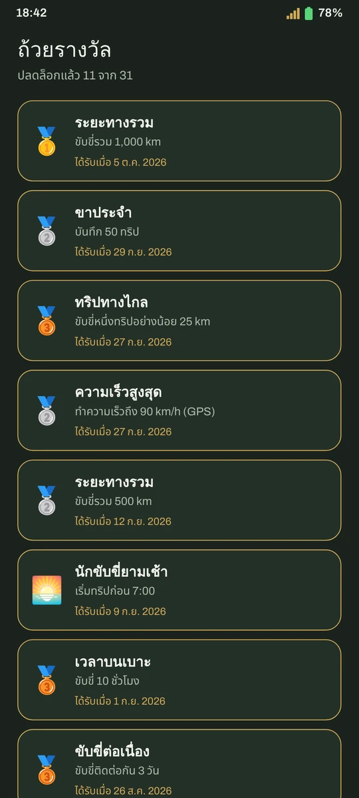
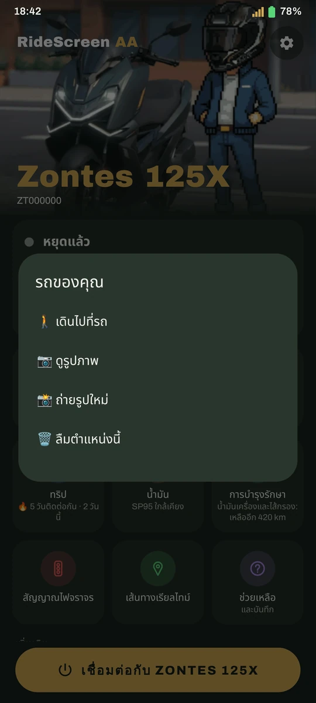
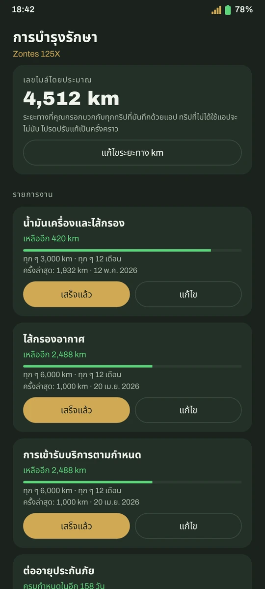
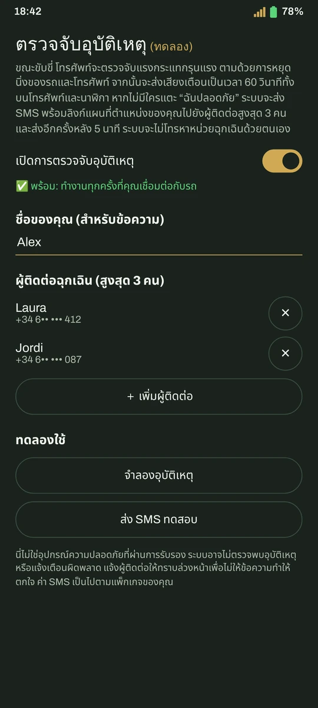
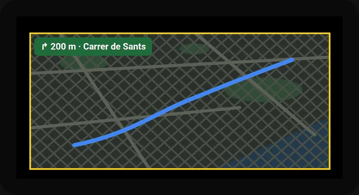
ปรับภาพ ดูผลบนหน้าปัดทันที
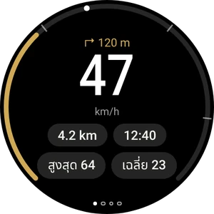
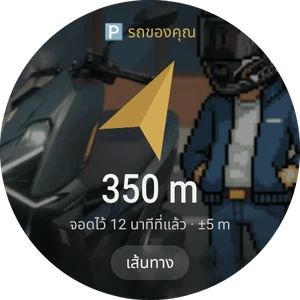
แอปสำหรับนาฬิกา Wear OS · คู่มือนาฬิกา
กดปุ่มด้านบน ดาวน์โหลดได้ทันที (หรือจาก GitHub) เวอร์ชันต่อๆ ไปแอปจะเสนอให้คุณเอง
ตั้งค่าใน Android Auto ครั้งเดียว คู่มือจะแสดงวิธีพร้อมภาพหน้าจอ
แล้วแตะเชื่อมต่อ หลังจากนั้นแอปจะเชื่อมต่อเองเมื่อคุณสตาร์ทรถ
ไม่ใช่ เป็นโปรเจกต์อิสระ ทำโดยไบเกอร์คนหนึ่งสำหรับ Zontes ของตัวเองแล้วแบ่งปันให้ชุมชน ไม่มีส่วนเกี่ยวข้องกับ Zontes, CFMoto, Carbit หรือ Google
ไม่มีค่าใช้จ่าย ฟรี ไม่มีโฆษณาหรือการสมัครสมาชิก และโค้ดเปิดเผย (สัญญาอนุญาต AGPL-3.0) ถ้ามีประโยชน์ คุณสามารถเลี้ยงกาแฟผมสักแก้ว
กำลังจะมา ระหว่างนี้ดาวน์โหลดได้จากเว็บไซต์นี้ ถ้า Play Protect เตือน เป็นเพราะยังไม่รู้จักแอปนี้: รายละเอียดเพิ่มเติม → ติดตั้งต่อไป
การเดินทาง รูปภาพ และการตั้งค่าของคุณอยู่ในมือถือของคุณ: ไม่มีบัญชี ไม่มีคลาวด์ แอปส่งเพียงรายงานข้อผิดพลาดแบบไม่ระบุตัวตน (ไม่มีอะไรที่ระบุตัวคุณได้) เพื่อให้เราแก้ไขได้ และคุณปิดได้
สำหรับแผนที่ เพลงสตรีมมิง และราคาน้ำมัน ต้องใช้ เหมือน Android Auto ในรถยนต์ ส่วนการเชื่อมต่อกับรถใช้ Wi‑Fi ของรถเอง
ดูคู่มือ ซึ่งมีข้อผิดพลาดที่พบบ่อย ถ้ายังไม่หาย ในแอป: ❓ ช่วยเหลือ → แชร์บันทึก แล้วส่งมาพร้อมเล่าว่าเกิดอะไรขึ้น